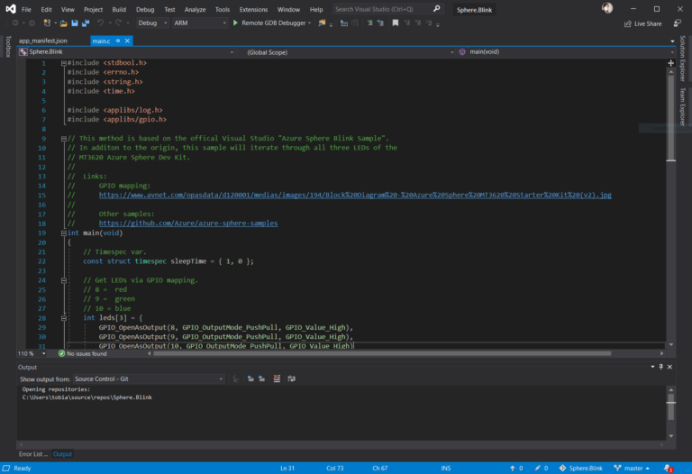

Ich konnte noch ein kostenfreies Azure Sphere Dev Kit auf Basis eines MediaTek 3620 ergattern können. Nach anfänglichen Schierigkeiten mit den erforderlichen Azure Active Directory Account und einem speziellen Tenant konnte ich nun die ersten kleinen Gehversuche für auf dem Sphere laufenden Programmen wagen.
Back to C!
Man schreibt im Standardfall erst einmal auf Basis von C seine Programme. Dies war wieder ein kleines Abenteuer da meine C Zeiten schon in einer frühen Phase meines langvergangen Studiums zuende ging.
Man schreibt im Standardfall erst einmal auf Basis von C seine Programme. Dies war wieder ein kleines Abenteuer da meine C Zeiten schon in einer frühen Phase meines langvergangen Studiums zuende ging.

Nichtsdestotrotz hat es Spaß gemacht auf dem, dass im Azure Sphere SDK enthaltene, in Visual Studio integrierte Vorlage für das Blink Beispiel zu erweitern damit alle drei LEDs des Boards abwechselnd einmal aufleuchten.
Qelltext
Die mit vielen Kommentaren versehenen Quelltexte zur App liegen wie immer auf meinem GitHub Profil im Repository c-azure-sphere-blink.